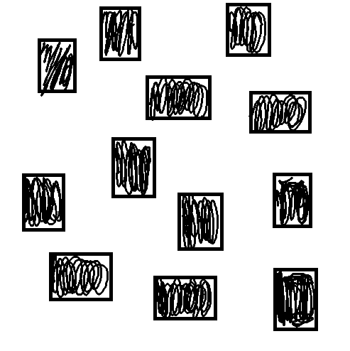
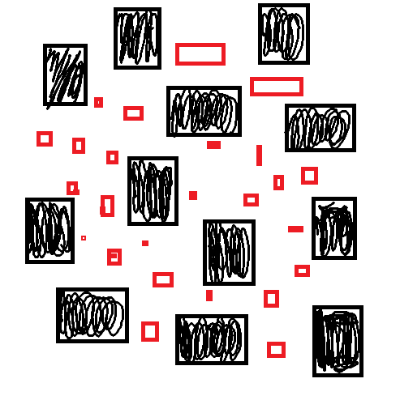
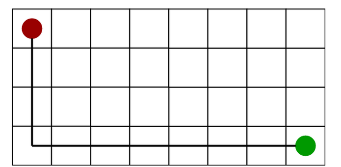
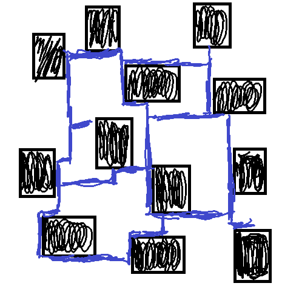
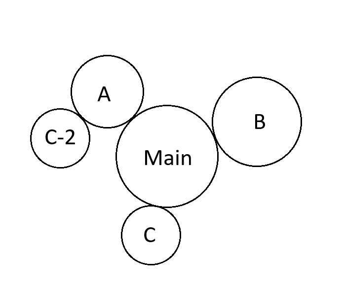
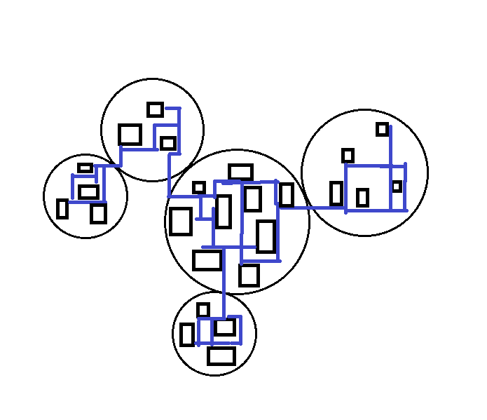
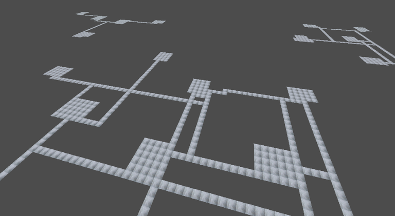

FPE:FaB - Sampling Sampled Samples
The second half of the story will be about my full adventure with utilization of Poisson Sampling in map generation, and how much time it took to perfect it.
So I started with thinking how can I utilize this algorithm in generation of at least the main section, and started with the generation of rooms around.

Now I had perfect way of making good hallways from this, but I was too wary of too much straight hallways, and decided, to add multiple points, that will serve as obstacles in generating connections between these rooms. Obviously, I used the same algorithm to place them

The key problem was:
- adding too much of them made the hallways too wiggly or even not able to connect all rooms
- adding not enough of them resulted in no difference between lack of them
It took me way too much time to realize this solution is much more of a problem itself, than a help.
So I came back to the earlier approach, and focused on drawing hallways. The answer to this challenge was really straightforward: pathfinding algorithm, and to be more direct, A* search algorithm.
It is a technology of a best-first search approach, and also a customizable one. You can use it either if you want diagonal paths or only axis-aligned ones. You can also choose the way of computing the path cost (heuristics), and that's the point, why I used it. It is because one of these computational formulas called Manhattan distance heuristic. It is the its most simple approach, that looks like this:

It just returns a giant "L" for every path it can handle, making the paths look more like the buildings at the const of lacking wiggliness. Fortunately, it is compromised by how the rooms are placed, and how they can block the way themselves.
Incorporating this algorithm in connecting room doors to each other results in something like this:

This is the perfect map for a game like mine. Enough distance between everything and enough crosspaths to keep the player entertained with challenge.
The only thing left is Incorporation of multiple sections into one map, while also maintaining distance between them. And guess what can come into handy in situations like this?
Yeah, the Poisson Disc Sampling.
But also we need to recall the .yaml file I created, as it takes the most interesting part of the show.
It is because as you may seen earlier in the post about the structure of the map, the yaml map config contains sections with parameters like this:
- id: 0
src: -1
size: 40
rooms: 10
min_dist: 18And they have actual meaning behind them:
- id - identifier of a section
- src - other section that will be connected to the specified one
- size - radius of the section space
- rooms - amount of rooms in this section
- min_dist - minimal distance between rooms
It can hint how its gonna work, so I'm gonna say it now.
The current map generator first reads the yaml config, and samples positions for the centers of every sections. For this job, the program uses external implementation of the algorithm in Godot, but modified (by me) in such a way, that the program uses different range of placement depending on what is written in the file. Here's the graphical visualisation:

Then in each of these sections, it generates given amount of rooms, that are further connected by the A* algorithm to get the hallways between them. The last thing (not implemented as for now) is just making connection between the segments.
And voilà:
{kind=link}

{kind=link}

So, the moral of the story is clear: "If you get a hammer in your hand, everything looks like a nail".
I don't really know, what the next post will be about, as it depends on how interesting it will be. As for now, I'm at the moment of making my program generate walls, and its already much of a task, so you may some day hear about how I got to know about how do quaternions work, or about flood fill algorithm usage in optimising the map sizes.